About a week before the con, Kohi asked me if I wanted to go. I had never heard of Chibi Chibi Con, but it being free and somewhat local convinced me immediately! It's a yearly event at Evergreen State College, the college where you can give yourself your degree in foot studies.
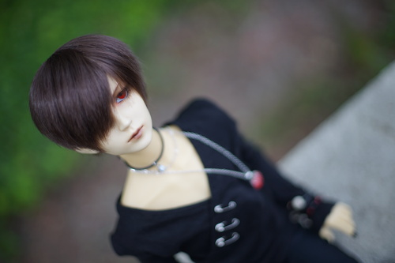I was very excited for another excuse to wear my h.NAOTO birdcage again and Kohi wanted to do a OOT gyaru code. I brought my 1.6kg little incel doll as part of my outfit. He's more accessorised than I ever will be. Does that make me accessorised?? (please send me your concrit by screaming into the sky)
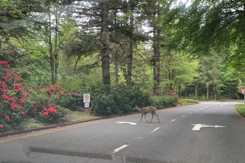The location of this campus is really nice. There's a long driveway out to it through a forest area. A deer crossed the road in front of us on our way in. The biggest issue with this location is there is no cell service. It's not too hard to find your friends, but good luck getting a message in or out more than once an hour.
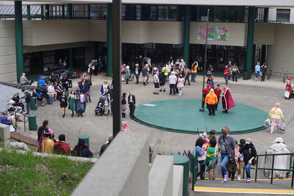 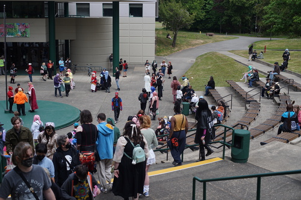 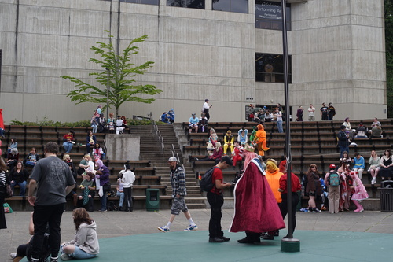Check out this Grassy Knoll! I brought the wrong doll with me!
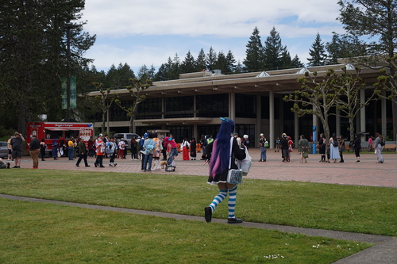They had 2 food trucks in the square. I think it would have benefitted them to have added a third. They seemed pretty popular.
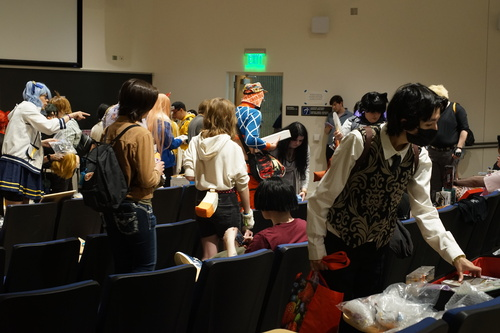Our first stop was the swap meet. This was located in a small lecture hall across the small campus. People were setting out their small collections on the tiny desks. It didn't seem like a great place for such activities. All of my Anime Junk of Questionable Worth is pretty far away, so I showed up empty handed. My buddy maullar let me take a "Gran from Granblue Fantasy" can badge and a Christmas Elf Slave for free!! I love Elf Slave! I partook in the free pile, because all I had to offer was my David photocard original from my itabag. I took a bit! I recognized the tanuki from Gekkan Shoujo Nozaki-kun, so I grabbed 3 keychains featuring him. I grabbed 2 more keychains that I didn't recognize as well. One boy was cute and one boy was scary! I later found out they are both from Donten ni Warau. Someone was just dumping their 2014 keychains! I also grabbed a Gwagur plushie keychain. She's a hot topic right now! I'll be rich soon! Other items I took were 5 rolls of washi tape and a diffraction grating keychain.
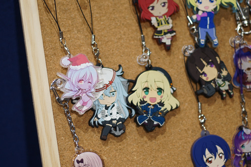The artist alley was similar in quality to Sakuracon, with less artists of course. I recognized a lot of artists from Sakuracon. I can't imagine many if any flew in for a booth, so I'd bet there's a lot of overlap with Sakuracon locals. There were also none of the HUGE STACKED PRINT BOOTHS that you'd see in the Sak Dealer's Hall.
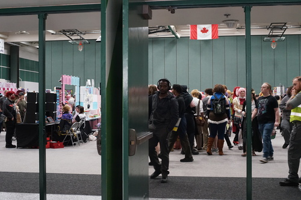 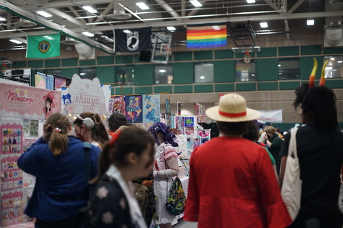Approximately 3 booths in, I found Chan Chau. I picked up the artbook "Perennial" immediately to find boys with their favorite pens picked out for them?! TELL ME MORE. There was even a small comic about a penmaker. I believe all of the printed comics were also uploaded online for free, so please check them out! After returning to the booth like 5 times, I ended up buying my own copy of Perennial. Talking to Chan was very inspiring! I can't wait to learn more about these nicely scented boys~
The second artist I really liked was Questtneo, who had some lovely Black Butler prints. She was even cosplaying Ciel too! How cute!
There was no dealer's hall, but one dealer had some non artist items including a few old issues of Volks News for $10 each, Re-ment sets for $250, and a bucket of marked up Daiso items. Truly the dealer's hall experience in a single booth.
At the end of the AA Annex, Melanie Kohn, voice of "Lucy" and an extra in the Godfather, had a booth set up. We are rollin hard here, guys!
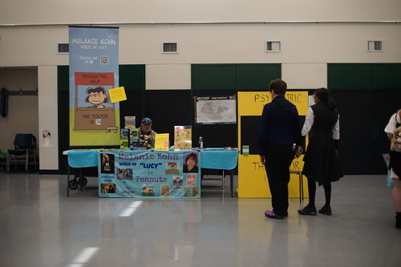I met a few doll owners during my walk. Almost immediately in the AA, I found a very concerned pink haired mini boy! I believe his owner said he was a Withdoll, but my memory is failing me. I love his expression! So cute!
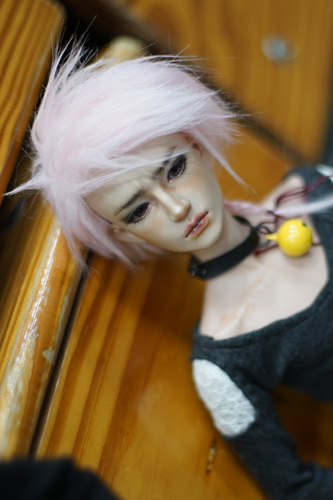 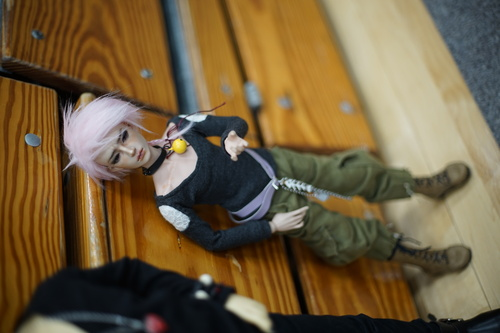 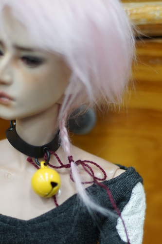I love his little rat tail braid!
Next I found a regal centaur in a cat carrier. The floral scenery is a very nice touch.
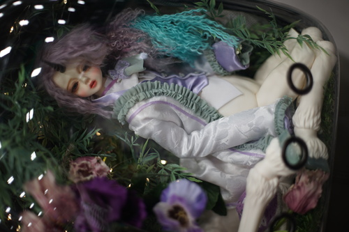Both owners were very nice! They were part of the Olympia BJD community and tried to invite me to their group, but I simply do not live close enough. Olympia's meetup group is really impressive though. They've been regularly holding meetups consistently for as long as I've been in the hobby! I can't think of any other area who has held meets as long as them.
By the end of the AA, we had assembled our full party. Frisk and Teezan were also attending. Teezy forgot his fountain pen despite me telling him to bring it the night before. He gave me some "Jauffre Juice" stickers. I have no idea what that means!
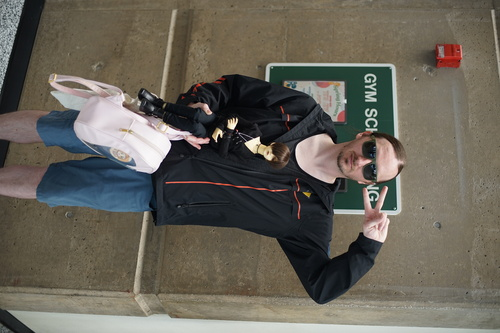Frisk promised me a Office Expo press badge, but I declined after my last experience being homeless in LA because he only figured out my flight to AX.
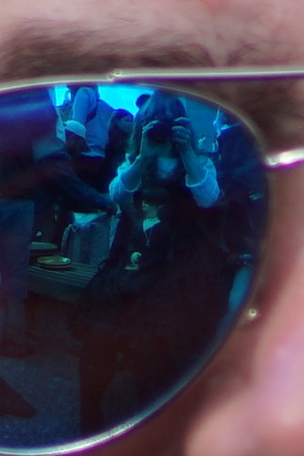The group wanted to go to pizza for dinner and then stop by a closing Joann's after. Joann's was full of junk and I didn't buy anything. Frisk reported that the toilets did not flush.
After Joann's, we had around 20 minutes left before the con ended. We ran back to finish our AA business (Kohi had bought something defective and needed to exchange it), we sat outside in the courtyard and drew together.
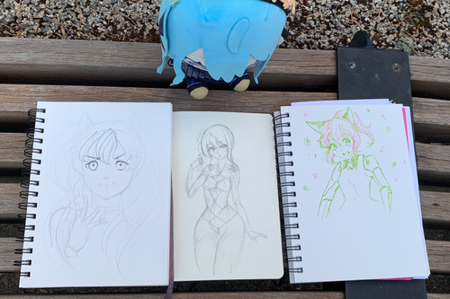Here are the results of our 10 minutes of work. Maullar refused Kohi's prompt of "draw the mascot" and continued working on something he started earlier. I tried to get a few more lines in after time was up and it reminded me of exams for the first time in 6 years. Con security almost immediately cleared us from the courtyard and told us to get our butts home.
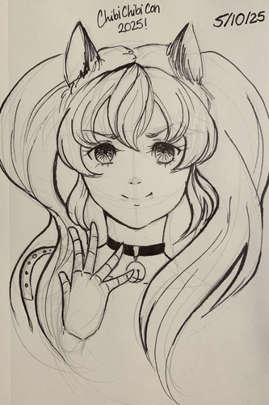I didn't get a full 30 minutes in, so I continued inking when I got home. There's a poster contest for this convention where they give you vague suggestions for the mascot, so her design is really up to the artist drawing her! ...why didn't I make her a pink haired robo catboy twink???!?!?!
And now, the full haul:
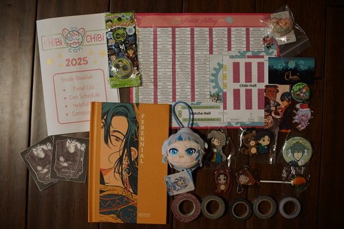Cheby received his second gift during this con! I was handed this very cute little embroidered heart. I can't believe someone would give me something with this much effort put into it! It has a little sheet of paper that links to this site. I put it in his chest cavity for safe keeping. I will definitely forget and be overjoyed when I discover it next!
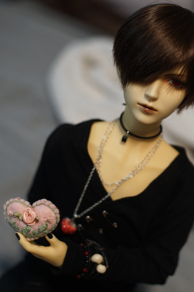Both Kohi and I loved the con! It was relaxed and easy to locate your friends. This was by far the smallest convention I've been to. There was also a more friendly vibe than at Sakuracon or AX. I really enjoyed hanging out with my friends who I didn't get to see enough at Sakuracon. I've never gotten to spend a whole con with Kohi!
The price was great. The AA was the appropriate size for a one day convention. Parking is free. No badges at all! Of course, with a con this small, you can't really funmax your activities like you could with a big con. Regardless, it was still very enjoyable! I highly recommend checking it out with your friends if you live in the area around Olympia.